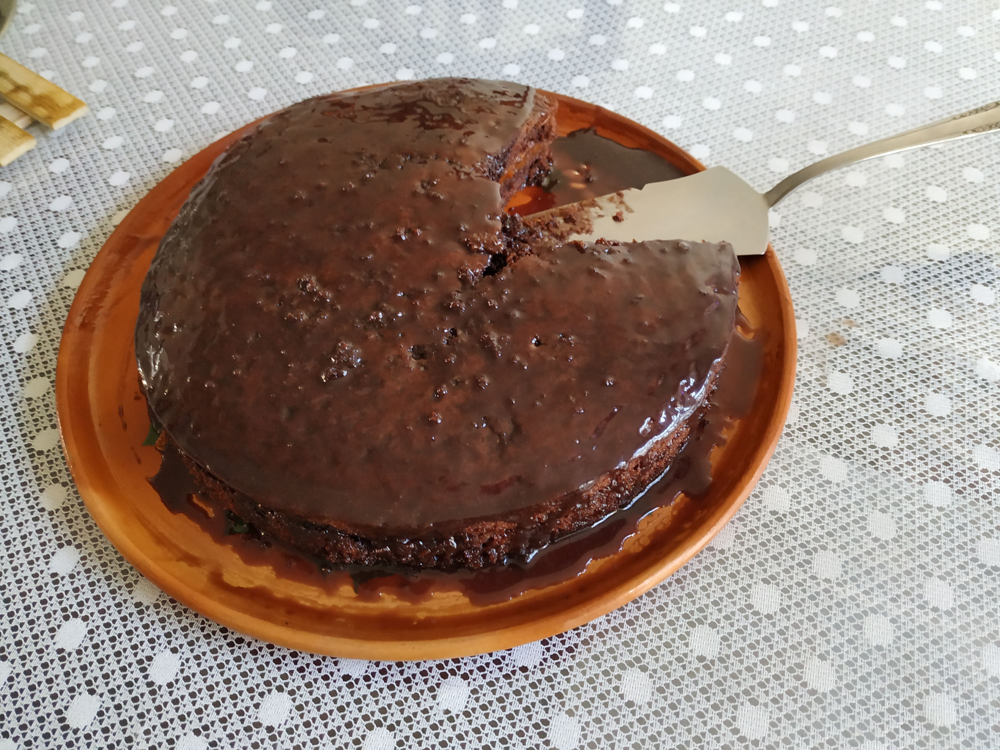

Bolo Nega Maluca
Ingredientes
- Massa:
- 2 xíc. de farinha de trigo
- 2 ovos
- 1 xíc. de açúcar
- 1 xíc. de chocolate em pó
- 1 xíc. de óleo
- 1 colher de fermento químico
- 1 xíc. de água fervendo
- 1/2 xíc. de cafezinho de rum
- Glacê:
- 1 colher de manteiga
- 1 xíc. de açúcar
- 3 colheres de chocolate em pó
- 3 colheres de leite
- Para a massa é só misturar tudo numa tigela e pôr para assar.
Modo de Preparo
O recheio pode ser feito com doce de leite e a gosto acrescentar passas ou cerejas ao rum.
Para a cobertura pode ser usado o glacê ( misturar tudo numa panela, levar ao fogo mexendo sempre para não grudar e quando engrossar retirar do fogo e cobrir o bolo) ou então usar uma ganache (chocolate amargo derretido em banho maria acrescido de creme de leite sem soro) com chocolate granulado por cima.
